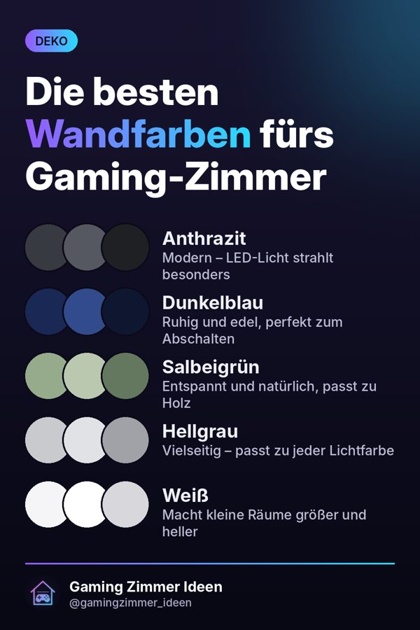

Die besten Wandfarben fürs Gaming-Zimmer – und wie sie wirken

Welche Wandfarbe passt ins Gaming Zimmer? Anthrazit wirkt modern und lässt LED-Licht strahlen, Dunkelblau ist ruhig, Salbeigrün entspannt, Hellgrau ist vielseitig und Weiß macht kleine Räume größer.
Auf einen Blick
- Anthrazit – Modern – LED-Licht strahlt besonders
- Dunkelblau – Ruhig und edel, perfekt zum Abschalten
- Salbeigrün – Entspannt und natürlich, passt zu Holz
- Hellgrau – Vielseitig – passt zu jeder Lichtfarbe
- Weiß – Macht kleine Räume größer und heller